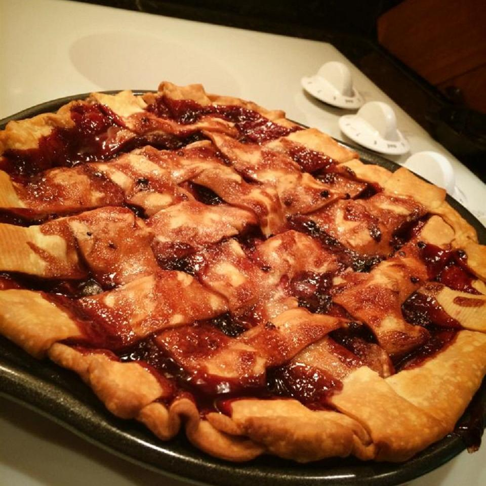

Apple Blackberry Pie

A twist on traditional apple pie. Perfect for those who love apple pie but are looking for something a bit less sweet
Ingredients
- 1/4 cup butter
- 1 tbsp flour
- 1/2 cup water
- 1/2 cup sugar
- 4 apples
- 6 ounces blackberry
- 1 tbsp lemon juice
Directions
- Preheat oven to 220 c
- Melt butter in a saucepan over medium-low heat; stir in flour to make a smooth paste. Whisk water, white sugar, brown sugar, and lemon juice into butter mixture. Bring to a simmer and whisk constantly until mixture is thick, about 3 minutes. Stir 6 blackberry halves into sauce, reduce heat to low, and continue cooking while you complete remaining steps. Stir sauce occasionally.
- Line a 9-inch pie dish with a crust. Place apples and remaining blackberries into crust. Cut remaining crust into strips about 1 inch wide. Weave pie crust strips into a lattice crust on top of the pie; pinch ends of strips to edge of bottom crust to seal. Spoon hot blackberry sauce over pie, letting it soak through the openings in the top crust. Place pie onto a baking sheet to catch drips.
- Bake in the preheated oven for 15 minutes. Reduce oven heat to 350 degrees F (175 degrees C) and continue baking until crust is golden brown and sauce is bubbling, 35 to 45 more minutes.